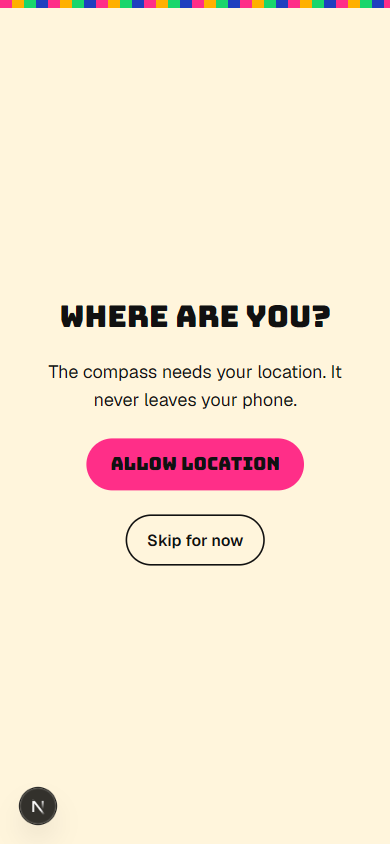
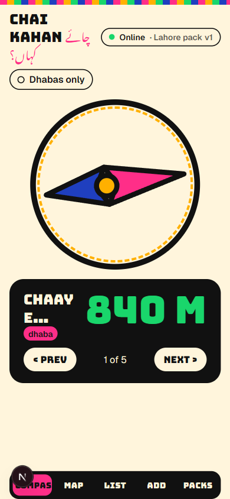
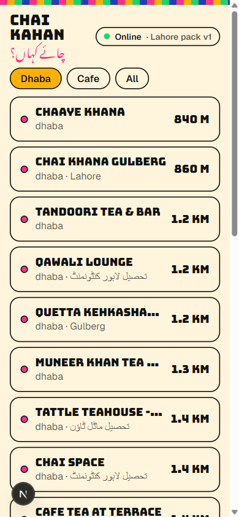
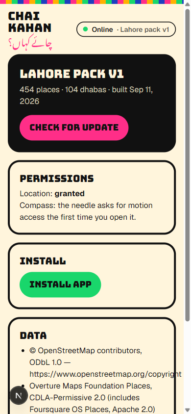

You want chai.
No Service
Your map wants signal.
Chai Kahan
چائے کہاں؟
An offline-first compass to the nearest dhaba in Lahore. Download the city once with signal.
Online · Lahore pack v1
Offline · Lahore pack v1
The needle still points.
GPS + magnetometer → bearing − heading. 454 places in IndexedDB. No tiles, no server.


Offline · Lahore pack v1
454
places in the Lahore pack, from OSM, Overture and a curated list
< 1 ms
to find the nearest dhaba, computed on the phone


Download the city once.
Then it works with nothing.
Chai Kahan
چائے کہاں؟
musaabjaved.com